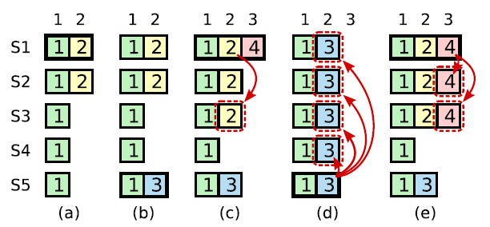

raft详解
分布式共识，主要解决的问题是在不可靠的多个节点就一个值如何达成一致。 分布式共识是人们几十年来努力解决的一个难题。
raft通过将算法分解为：领导者选举、日志复制、安全性几个模块，减少状态机的状态来提升可理解性。
使用复制状态机提供容错服务
复制状态机：状态机基础上增加复制多个服务来实现来实现分布式系统的容错。通常而言，一个支持F个故障的系统，必须至少包含2F+1个副本。复制状态机通常都是基于复制日志实现的。每一个服务器存储一个包含一系列指令的日志，并且按照日志的顺序进行执行。每一个日志都按照相同的顺序包含相同的指令，所以每一个服务器都执行相同的指令序列。因为每个状态机都是确定的，每一次执行操作都产生相同的状态和同样的序列。保证复制日志相同就是一致性算法的工作了。服务器集群看起来形成一个高可靠的状态机。
[clients, replica servers]
- 实例：配置服务器，例如MapReduce或者GFS的master
- 实例：key/value存储服务，put()/get()
- 目标：与单个非复制服务器相同的客户端行为，但是一些服务器故障时还是可用的
- 策略：
- 每个副本服务器以相同的顺序执行命令
- 因此，它们在执行时仍然是副本（即相同的副本）
- 所以如果一个失败了，其他人可以继续
- 当失败时，客户机切换到另一台服务器
- GFS和VMware FT都是这种风格
如何避免脑裂？
假设客户端可以连接副本A，但是不能连接副本B，客户端可以仅仅用使用副本A吗？如果B已经故障了，客户端必须在没有B的情况下进行处理，否则服务就没法容忍这种故障。
如果B是好的，但是网络阻止客户端连接到B，或者客户端应该在没有B的情况下处理吗？因为它可能还活着，并且为其他客户服务——这样就有脑裂的问题。
下面用例子展示一下为什么应该避免脑裂？
容错的 key/value 数据库：
C1和C2在不同网络分区，客户源和不同的服务器通信。
C1: put("k1", "v1")
C2: put("k2", "v2")
C1: get("k1") \rightarrow ???
正确答案是"v2"，因为这是非复制服务器将产生的结果。
但是如果两个服务器由于分区独立服务C1，C2。C1仍然会得到 "v1"。
问题：计算机无法区分崩溃的机器和分区的网络，两者都表明无法与一台或多台计算机通信。
我们需要一个满足三个目标的状态机复制方案：
- 尽管有任何一个（故障停止）故障，仍然可用
- 处理分区，无裂脑
- 如果故障太多：等待修复，然后恢复
应对副本分区：多数派投票
2f+1个服务器可以容忍f个故障，例如3个服务器可以容忍1个故障。
必须获得多数服务器(f+1)同意继续，f个故障服务器保留f+1个多数派，就可以继续处理。
为什么多数派就能避免脑裂呢？
最多一个分区可以有一个多数派。
注意：大多数服务器都是2F+1服务器，而不仅仅是活动服务器关于多数，真正有用的是任何两个都必须相交。交集中的服务器只能以一种方式投票交叉口可以传达关于先前决定的信息。
1990年左右发明了两种允许分区的复制方案，paxos和VR在过去的10年里，在现实世界中得到了大量的应用。raft是对现代技术的一个很好的介绍。
Raft概览
使用Raft的状态机复制
[图示: 客户端, 3个副本, k/v层, raft层, 日志]
- 服务器的Raft层选择一个领导者。
- 客户端向领导者发送RPC给k/v层，Put/Get/Append。
- k/v层转发请求给Raft层，但是不会立即给客户端发送响应。
- 领导者的Raft层发送每个客户端的命令到所有的副本，通过 AppendEntries RPC。
- 每个跟随者附加到本地日志（但是还没有提交），然后发送应答给领导者。
- 在领导者服务器，如果大多数已经将其添加到日志中，则entry变为已提交，保证不会被忘记。多数派：肯定会被下一个领导者的投票请求看到。
- 一旦领导者提交，通过下一个AppendEntries RPC（通过commitIndex）找到已经提交的entry，然后服务器就将操作应用到k/v状态机。
- 在提交后，领导者将应答返回给k/v层，k/v层对DB应用Put操作，或者获取Get的结果。
- 领导者将执行结果返回给客户端。
异常场景分析
注意一下，第6步中，收到大多数的请求后，领导者就会将entry变为已提交
- 此时可以返回应答给k/v层，k/v层可以做Put操作
- 与此同时，领导者将通过AppendEntries RPC发送给跟随者，通知其将entry状态修改为已提交
有两种场景需要考虑，
- 如果跟随者没有将entry状态修改为未提交的时候，但是领导者已经变为已提交的状态时，领导者宕机。
- 如果跟随者没有将entry状态修改为未提交的时候，但是领导者还没有变为已提交的状态时，领导者宕机。
此时，只有收到最新日志的跟随者，才会被选举变为领导者。对于已经已经持久化的日志，一种是已经已提交，一种是未提交，新的领导者提交一个新任期的 no-op entry，一旦该entry存储在大多数服务器上，它就会增加提交索引，并将新的提交索引发送给所有跟随者。所以，这个entry不会丢失。新的领导者将确保这一点。
https://stackoverflow.com/questions/37108309/raft-committed-entry-may-be-lost
为什么需要日志？
服务器保持状态机状态，例如键/值db为什么还不够？
对命令编号很重要，帮助副本在单个执行顺序上达成一致，帮助领导者确保跟随者拥有相同的日志。
副本使用日志保存命令，直到领导者提交。所以如果一个跟随者丢失一些日志，领导者可以重新发送，可以在下次重启后持久化和重演出数据。
Raft设计有两个主要的部分：
- 选择一个新的领导者
- 保证在故障的情况下有相同的日志。
领导者选举
为什么需要领导者？
保证所有副本以相同的顺序执行相同的命令。
raft使用“任期”对领导序列进行编号。
新的领导者会有新的任期。
任期
一个任期最多有一个领导者，可能没有领导者。
每次选举也跟一个特殊的任期关联，每个任期只会有一个成功的选举。
任期编号帮助服务器跟踪最新的领导者，而不是被取代的领导者。
选举
什么时候Raft会开始领导者选举？
AppendEntries是隐含的心跳；领导者定期发送它们。
如果其他服务器没有收到当前领导的“选举超时”消息，假设领导者已经宕机，开始一轮选举。
[状态转移图，图4： 跟随者、候选者、领导者]
跟随者增加本地的 currentTerm，变为后选择，开始选举。
注：这可能导致不需要的选举；这是缓慢但安全的
注：旧的领导者可能还活着，认为是领导者
候选者
当服务器成为候选服务器时会发生什么？三种可能
- 获得多数投票，转化为领导者，本地观察和计数选票，注意：不适应拜占庭式故障！
- 没有获得多数，从另一位领导者那里获取到信息，成为跟随者。
- 没有获得多数，但是不能从新领导获取信息，例如网络分区，超时开始新的选举（保持候选者）。
注：在第3种情况下，可以继续增加任期但不能添加日志entry，因为在少数派中，而不是领导者。一旦分区问题不存在，由于更高的任期，选举就随之而来。但是：大多数分区中的任何一个日志都较长（因此长期候选人被拒绝）或者如果什么都没有发生，他们的长度是相同的在多数分区中（这样，长期候选人可以获胜，但不会造成损害）。
如何保证一个任期最多一个领导者？
（论文图2：RequestVote RPC 以及 Rules for Servers）
领导者必须获得多数派服务器的“yes”投票。
每台服务器只能投一票。
在一个给定的任期内，最多只能有一个服务器获得多数选票。
- 即使网络分区，也最多有一个领导者。
- 即使某些服务器出现故障，选举也可以成功。
一个新的领导者是如何建立自己的？
胜利者获得多数赞成票。
立即向所有人发送Appendents RPC（心跳）。
新领导人的心跳抑制了任何新的选举。
选举不能成功有两个原因：
- 又一次超时（没有心跳），又一次选举。
- 更高的任期优先，较旧任期的候选人退出
如何设置选举超时？
每台服务器选择一个随机选择超时有助于避免分裂投票。
随机性破坏了服务器之间的对称性。
- 选择最小的随机延迟
- 避免所有人同时开始选举，为自己投票
希望有足够的时间在下一个超时到期之前进行选择。
其他人会看到新领导人的AppendEntries心跳和不成为候选人
什么值？
至少几个心跳间隔（网络可能会中断或延迟心跳）
一个随机的部分，足够让一个候选人在下一个开始开始前。
足够短，以便在测试人员感到不安之前，进行几次重新尝试。
测试人员要求在5秒或更短时间内完成选举。
Raft日志
我们讨论了领导者如何复制日志entry。
重要区别：复制entry与提交entry
- 承诺的entry保证永远不会消失。
- 已复制，但未提交的entry可能会被覆盖！
帮助思考每个参与者的明确“提交边界”。
将服务器日志是否总是彼此的精确副本?
不是：一些副本可能会延迟。
不是：我们将看到它们可以暂时有不同的entry。
好的消息：
- 他们最终会收敛
- 提交机制确保服务器只执行已提交的entry
其它标准：领导者不能简单地复制和提交旧任期的entry

S1没有成功复制任期2的entry到大多数，然后故障。
S5成为新的领导者，任期为3，增加entry，但是没有成功复制。
S1回来后，变为领导者。
- 从任期2复制旧entry，以迫使追随者采用其日志。
- 一旦term 2entry位于大多数服务器上，是否允许提交?
答案是否定的!想想如果我们这样做会发生什么：
- 任期2的entry复制到S3
- S1提交（因为大多数服务器已经成功）
- S1又一次故障
- S5被选择，任期为4，因为日志的结束有任期3的entry，每个在日志末尾有任期2 entry的人都投票给S5
S5变为领导者，强制将其日志复制到其它服务器。
- 任期2的entry，在索引2处，会被任期3的entry覆盖。
- 但是该entry应该是提交的。
- 所以，违反了领导者完整性属性。
解决方案：等到S1也复制并提交了任期4的entry，保证S5不再被选为领导者。因此，现在也可以提交任期2的entry了。
Raft什么时候可以覆盖日志entry？（见图7的问题）
必须是未提交的。
可以截断和覆盖更长的日志吗？图7 (f)就是一个很好的例子。
例如，领导者增加了许多entry到日志中，但是没有成功复制这些entry，可能是由于网络分区。
其它领导者，以后来的任期，也会在相同的索引中添加entry。（图7 (a) - (e))
- 至少提交其中的一些
- 现在不能再修改这个日志索引了
过期的服务器接收AppendEntries，覆盖未提交的日志entry
即使日志比当前领导人的要长得多!
这是可以的，因为leader只在entry提交后响应客户端。
因此，在(f)中生成覆盖项的leader不可能这样做。
Raft接口
rf.Start(command) (index, term, isleader)
k/v服务器的 Put()/Get() RPC处理程序调用 Start()
Start()立即返回 —— RPC处理程序必须等待提交。如果服务器在提交命令之前失去领导权，则可能无法成功。
isleader：如果这个服务器不是Raft领导者，客户端应该尝试另一个。
term：currentTerm，帮助调用者检测领导者是否降级。
index: 要查看命令是否已提交的日志entry。
ApplyMsg：带有索引和命令。
Raft在“apply channel”上给提交的日志entry发送消息。然后，服务知道如何执行命令，领导者使用ApplyMsg知道何时/什么响应等待的客户端RPC。
回顾
回顾全局
k/v服务作为一个示例
目标：提供与单个非复制服务器相同的行为
目标：少数服务器失败/断开连接时，仍然可用
注意网络分区和脑裂！
[图：客户端、k/v层、k/v表、raft层、raft日志]
[客户端RPC -> Start() -> 多数提交协议 -> applyCh]
状态机，应用，服务
几个提醒
- 在大多数应答 AppendEntries 后，领导者提交/执行
- 领导者告诉跟随者提交，执行（发送applyCh）
- 为什么只需要大多数？为什么不等待所有的节点？
- 可用性的需求，在少数故障的情况下，仍然能够给正常处理。
- 为什么多数就足够了?
- 任何两个多数派有交集
- 因此，连续几任领导人的多数派至少与一个对端重叠
- 因此，下一个领导者保证可以看到前一个领导者提交的任何日志条目
- 它是所有节点的大多数(无论是死是活)，而不仅仅是存活节点中的大多数
Raft日志（续）
只要领导者存活：
- 客户端只需要与领导者交互
- 客户端不会受到跟随者的影响
当变更领导者时，事情就会变得更有趣。例如在旧的领导者者故障后，在客户端不会看到异常的情况下，如何变更领导者。旧数据读取，重复操作，丢失操作，不同的顺序，等等。
我们想保证什么？如果任何一个服务器执行在日志entry中的命令，那就没有服务器为该日志entry执行其他操作。（图3，状态机安全性）。为什么呢？如果服务器不同意操作，则领导变更可能会改变客户端可见的状态，这违反了我们模仿单个服务器的目标。
例如：
S1: put(k1, v1) | put(k1, v2) | ...
S2: put(k1, v1) | put(k2, x) | ...
不能同时执行两个日志项!
持久性
日志压缩和快照
配置变更
性能
注：许多场景不需要高性能
- k/v存储可能需要
- 但是GFS或者MapReduce主节点则不需要
大多数复制系统具有类似的常见情况下的性能:
- 一次RPC交互和达成一致的一次磁盘写入
- 所以Raft是消息复杂性的典型代表
Raft做了一些牺牲性能的简单设计选择:
- 跟随者拒绝无序的AppendEntries RPC。（必须有序）
- 而不是等到洞被填满后再保存起来使用。
- 如果网络大量重新排序数据包，这一点可能很重要。
- 不提供批处理或流水线 AppendEntries 。
- 快照对于大的状态来说是浪费。
- 一个慢的领导者可能会伤害Raft，例如在地理复制方面。
这些对性能有很大的影响:
- 为了持久性的磁盘写入。
- 消息/包/ RPC开销。
- 需要按顺序执行已记录的命令。
- 只读操作的快速通道。
更注重性能的论文: Zookeeper/ZAB; Paxos Made Live; Harp